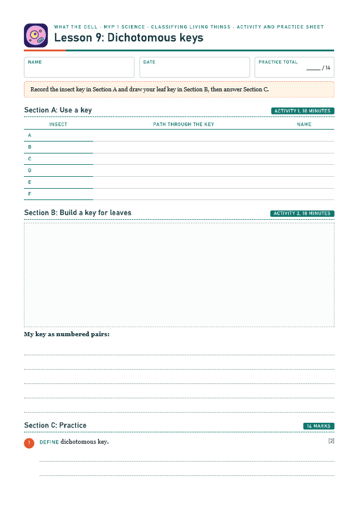

By the end of the lesson you can
- Record the results of the living lunch investigation
- Use a dichotomous key to identify organisms
- Construct a dichotomous key
- Explain why each question must have only two answers
Keys: arrows or a presentation clicker move the slides, F for full screen. Slides with a red dot have a video or simulation.
Videos (all 5 minutes or less)
- 2:38
Using Dichotomous Keys
Science Sauce. While you watch: What does each step of a key give you? Slide 9.
Simulations
- Lab
Print and practise

Activity and practice sheet
Used in the lesson’s activities, with practice questions. Your teacher has the answers.
Download (PDF)Lesson 9 slides
All 15 slides in one file, to read again or print. The video buttons on the slides open YouTube.
Download the slides (PDF)Revising? The Revision tab on the unit page has the unit notes and review.
Class activity pack
Everything to print for the lesson’s activities: picture cards, sorting mats, station cards with their kit lists, and the teacher’s set-up notes. Print it before class.
Download the activity pack (PDF)Notes: Dichotomous keys
dichotomous key
A set of questions, each with two answers, that leads to a name. For example: is it green? yes / no.
dichotomous
Splitting into two parts. For example: yes or no.
identify
Find out the name of an organism. For example: this beetle is a ladybird.
feature
Something you can see or measure. For example: smooth or jagged leaf edge.
branching key
A key drawn as a tree diagram. For example: like a family tree.
numbered key
A key written as numbered pairs of statements. For example: 1a ... go to 2.
Key words
| dichotomous key | two-choice questions that lead to a name |
|---|---|
| dichotomous | splitting into two |
| identify | find the name of an organism |
| branching key | a key drawn as a tree |
| numbered key | a key written as numbered pairs |